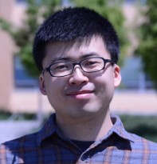

NING TIAN 田宁
Ph.D. Student
Mechanical Engineering
University of Kansas
Lawrence, KS 66045
E-mail: ning.tian@ku.edu
LinkedIn |
Google Scholar
RECENT UPDATES
Teletype text
- October 21-23, 2018: I attended the 44th Annual Conference of the IEEE Industrial Electronics Society in Washington DC. and
gave a poster presentation of our paper "A new nonlinear double-capacitor model for rechargeable batteries".
- July 16, 2018: Our paper, "A new nonlinear double-capacitor model for rechargeable batteries", will be forthcoming at the 44th
Annual Conference of the IEEE Industrial Electronics Society in Washington DC.
- October 31, 2017: Our paper "3-D Temperature Field Reconstruction for a Lithium-Ion Battery Pack: A Distributed Kalman
Filtering Approach" will be forthcoming in IEEE Transactions on Control Systems Technology.
- September 27, 2017: Our paper "Nonlinear Bayesian estimation: From Kalman filtering to a broader horizon" will be forthcoming
in IEEE/CAA Journal of Automatica Sinica.
- July 25-28, 2017: I attended the 1st Model Predictive Control Summer School in University of Wisconsin-Madison, Madison, WI,
and presented a project on lithium-ion battery fast charging.
- May 24-26, 2017: I attended the American Control Conference in Seattle, WA and presented our paper "Distributed Kalman
filtering-based three-dimensional temperature field reconstruction for a lithium-ion battery pack".
- May 12, 2017: Our paper, "On parameter identification of an equivalent circuit model for lithium-ion batteries", will be
forthcoming at the 1st IEEE Conference on Control Technology and Applications 2017 in Hawai'i.
- January 21, 2017: Our paper, "Distributed Kalman filtering-based three-dimensional temperature field reconstruction for
a lithium-ion battery pack", will be forthcoming at American Control Conference 2017 in Seattle, WA.
- August 18, 2015: I joined the research group of Dr. Huazhen Fang as
a Ph.D. student.